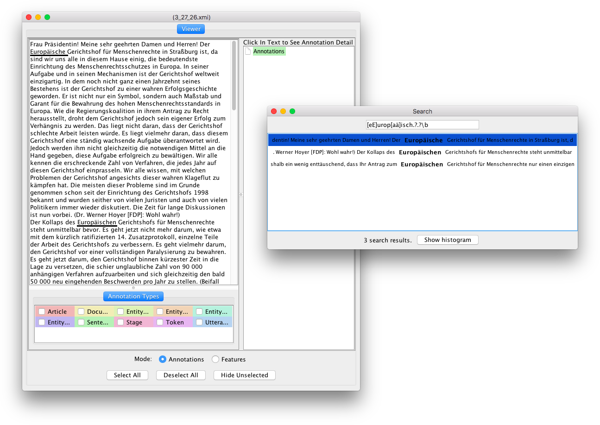
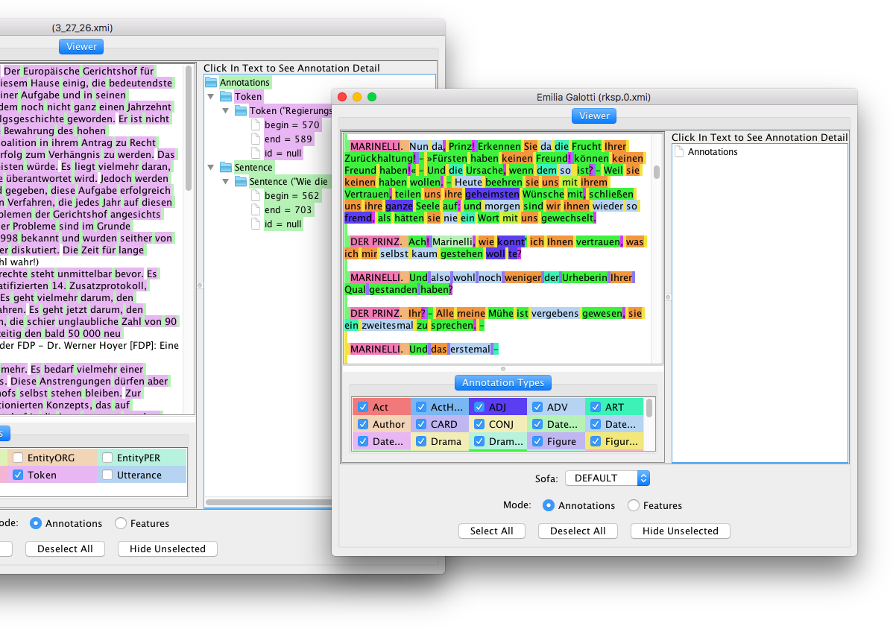

A simple Viewer for XMI files
This package provides a very simple viewer for XMI files, which is an extension and re-packaging of the UIMA Annotation Viewer. On Mac OS X, it nicely integrates with Finder.app, allowing to open and inspect XMI files with a double click or open on the command line.
Search capabailities are included as well.
Multiple windows
mvn packageThis gives you a file called SimpleXmiViewer-VERSION-full.jar in the target directory, which is a runnable jar file, containing all dependencies. Double click that file or run
java -jar target/SimpleXmiViewer-VERSION-full.jarto launch the viewer. Initially, the viewer displays a file open dialog.
Feel free to either open an issue on github or drop me a line if there are any issues or questions.